Ahh, who doesn't love Mario? He is one of the most influential and the most iconic video game character! His games are amazing and are loved by a lot of people around the world. Check out his games and more about him lower!
.
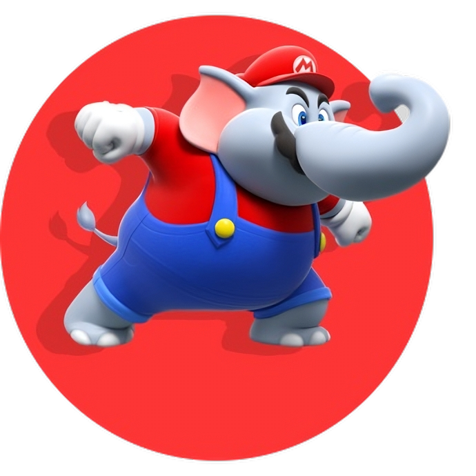
.
.
.
Mario's mainline games in chronological order:
Learn more about some of Mario's games by clicking here
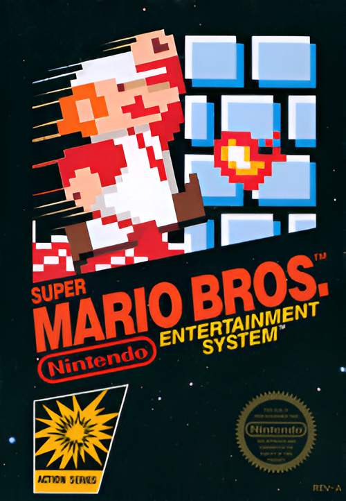


Super Mario Bros. 1
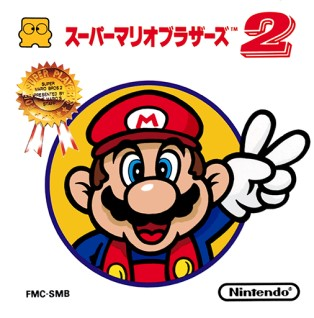Super Mario Bros. The Lost Levels
Super Mario Bros. 2
Super Mario Bros. 3
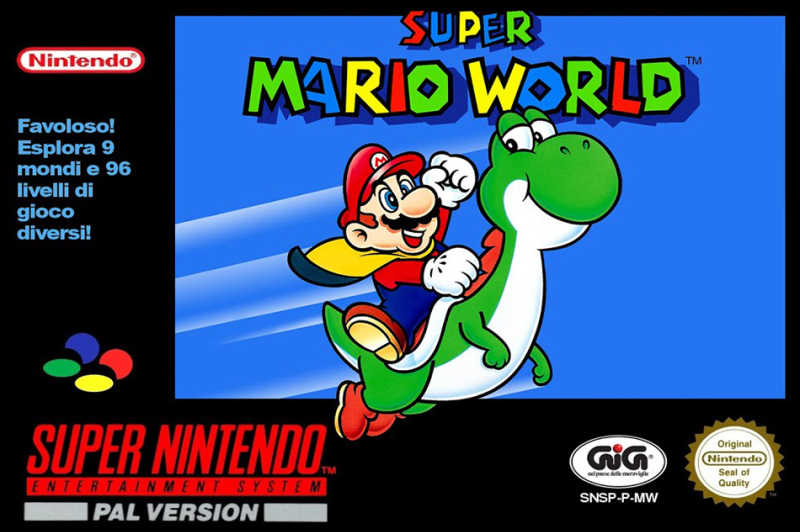Super Mario World
Super Mario 64
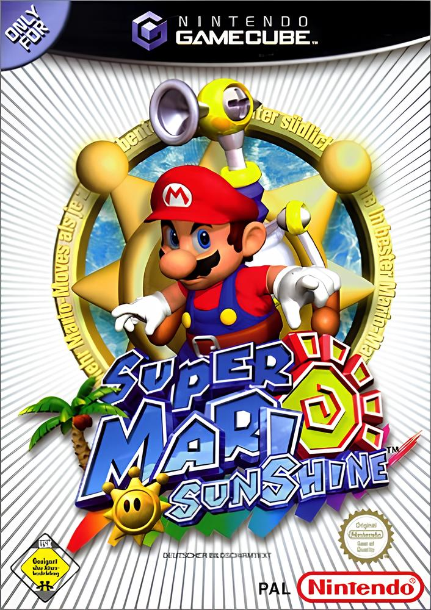Super Mario Sunshine
New Super Mario Bros.
Super Mario Galaxy
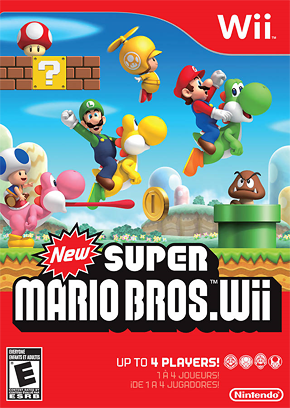New Super Mario Bros. Wii
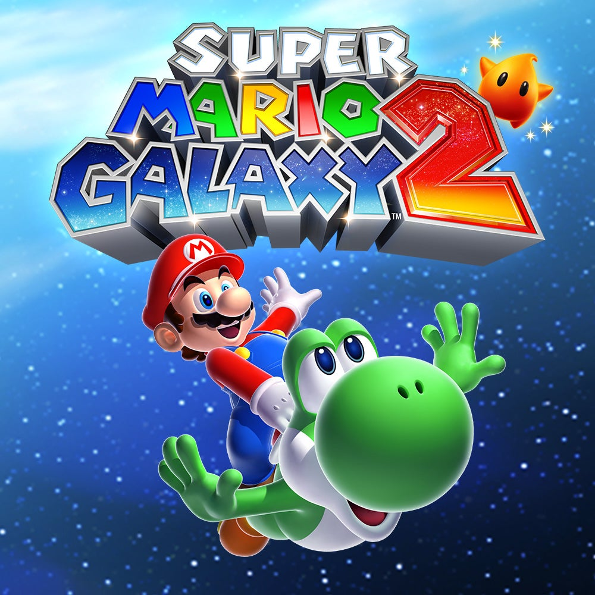Super Mario Galaxy 2
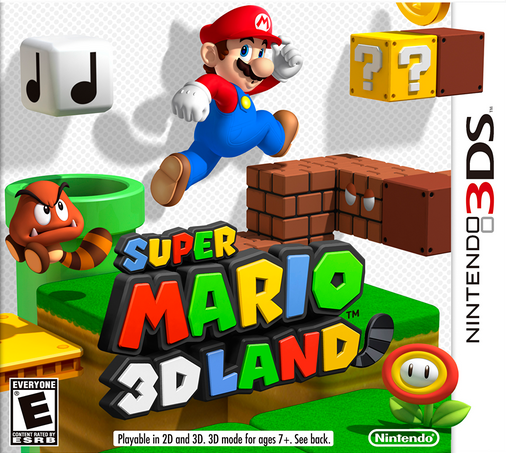Super Mario 3D Land
New Super Mario Bros. 2
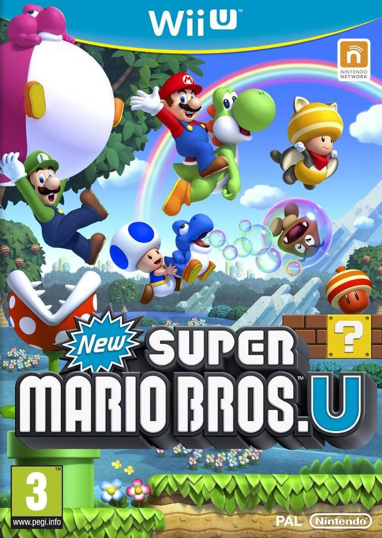New Super Mario Bros. U
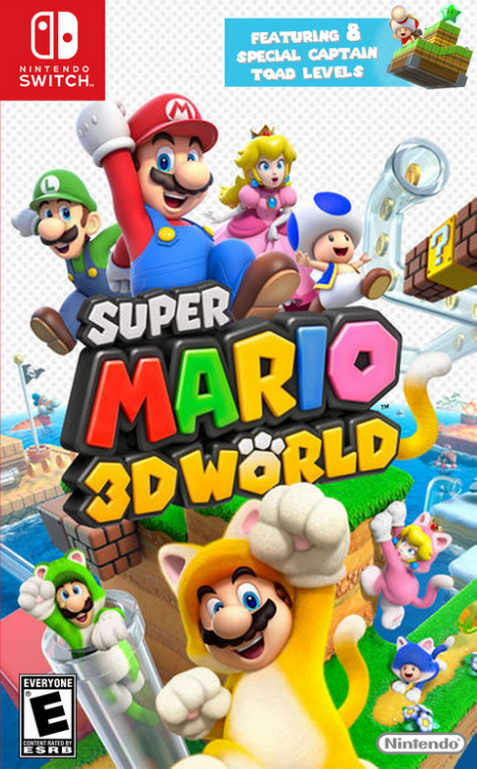Super Mario 3D World
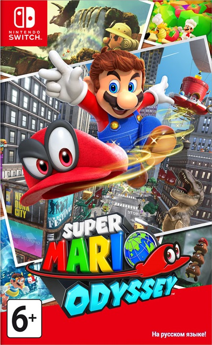Super Mario Odyssey
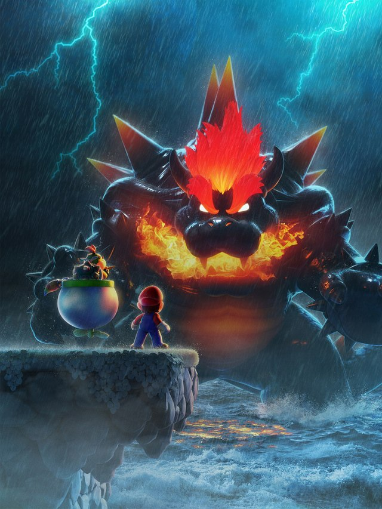Bowser's Fury
Super Mario Wonder
.
.
About Mario
Mario is a character created by the Japanese video game designer Shigeru Miyamoto. He is the title character of the Mario franchise and the mascot of the Japanese video game company Nintendo. Mario is an Italian plumber who resides in the Mushroom Kingdom with his younger twin brother, Luigi. Their adventures generally center on rescuing Princess Peach from the villain Bowser while using power-ups that give them different abilities. Mario first appeared as the player character of Donkey Kong (1981), a platform game. Miyamoto wanted to use Popeye as the protagonist, but when he could not gain the licensing rights, he created Mario instead. The graphical limitations of arcade hardware influenced Mario's design, such as his large nose, mustache, and overalls. Miyamoto expected the character to be unpopular and planned to use him for cameo appearances; originally called "Mr. Video" and "Jumpman", he was renamed Mario after Nintendo of America's landlord Mario Segale. After Donkey Kong, Mario starred in Mario Bros. (1983). Its 1985 Nintendo Entertainment System sequel, Super Mario Bros., began the successful Super Mario series. Charles Martinet voiced Mario from 1991 to 2023, when he was succeeded by Kevin Afghani.

Mario uses items, which give him various powers, and differ between the games he is in. The first power-up Mario used was the Hammer in Donkey Kong. Super Mario Bros. introduced the basic three power-ups that have become staples for the series, especially the 2D games – the Super Mushroom, a large red mushroom (similar to the real world fungus Amanita muscaria) which causes Mario to grow larger and be able to survive getting hit once; the Fire Flower, which allows Mario to throw fireballs; and the Starman (later named Super Star), which gives Mario temporary invincibility. These powers have appeared regularly throughout the series. Throughout the series' history, there have been several kinds of Mushroom power-ups, including the 1-up Mushroom (green), which gives Mario an extra life; the Poison Mushroom (purple), which causes Mario to take damage; the Mega Mushroom (yellow and red), which causes Mario to grow very large and become invincible for a short period of time; and the Mini Mushroom (blue), which causes Mario to shrink, and in some games, climb up walls.
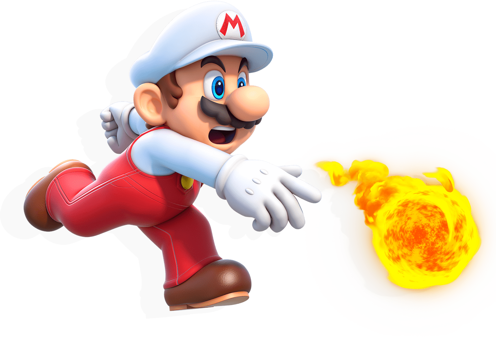Mario's occupation is plumbing, though in the original Donkey Kong games he is a carpenter. Mario has also assumed several other occupations: in the Dr. Mario series of puzzle games, which debuted in 1990, Mario is portrayed as a medical physician named "Dr. Mario", in the Game Boy game Mario's Picross, Mario is an archaeologist; in Mario vs. Donkey Kong 2: March of the Minis, Mario is the president of a profitable toy-making company. Mario is an athlete in Mario sports games in games such as tennis and golf, as well as a kart racer in the Mario Kart series. In September 2017, Nintendo confirmed on their official Japanese profile for the character that Mario was no longer considered a plumber, but the statement was changed in March 2018.